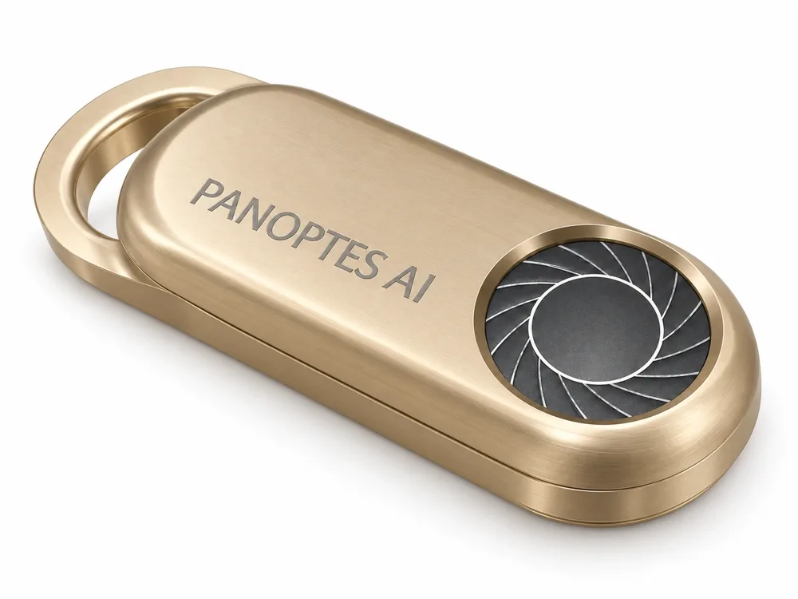
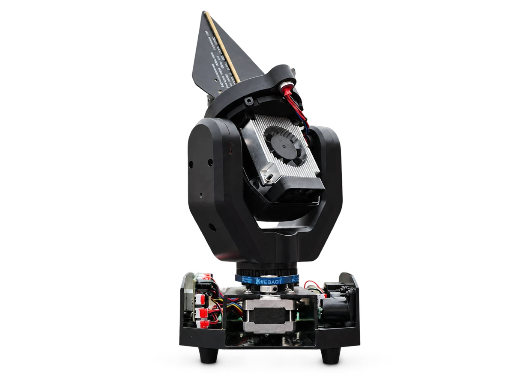
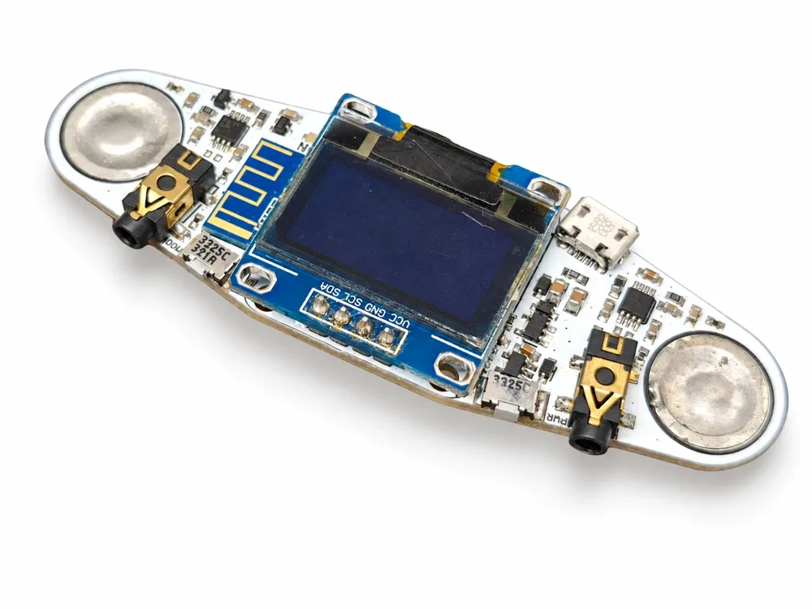
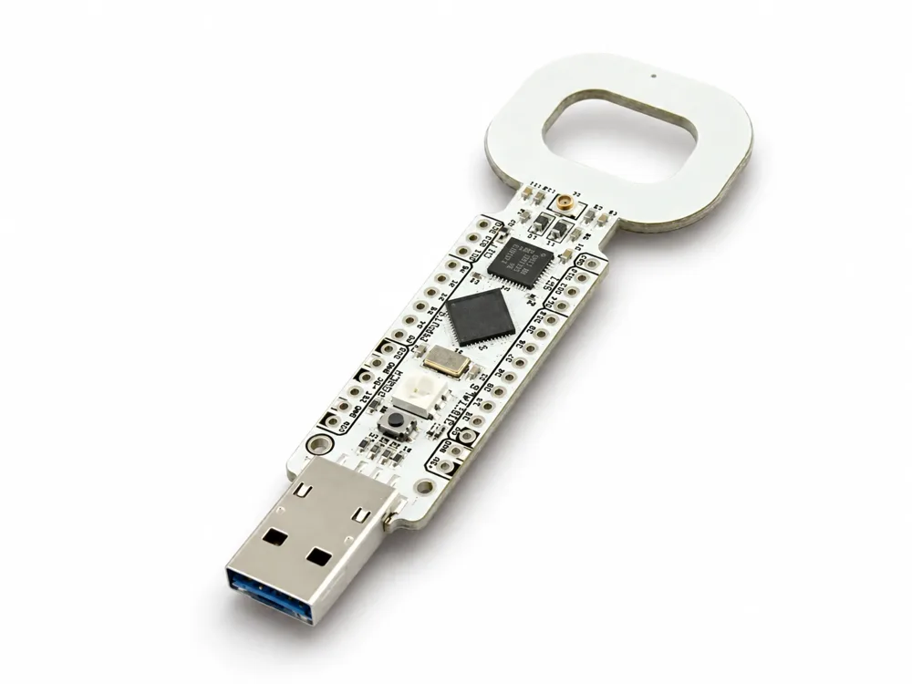

Électronique & embarqué
Cartes électroniques, logiciel embarqué et intégration.
Bureau d’études & accompagnement R&D · Lille
Conception électronique, systèmes embarqués et prototypage.
Parler de mon projet
Cartes électroniques, logiciel embarqué et intégration.
Prototypes fonctionnels, mesures et mise au point.
Exigences applicables, dossier technique et préparation des essais.

Miniaturisation · Électronique · Audio & Bluetooth LE

Radiofréquences · Détection de drones · Intégration

Acquisition physiologique · Électronique de mesure · Bluetooth

Électronique · Logiciel embarqué · Petite série
Une carte à modifier, un logiciel embarqué à développer ou un prototype à assembler.
Le devis précise les travaux, les fichiers et les prototypes à remettre.
Définir votre besoin
Fabrication mécanique et assemblage électronique en atelier.
Exigences applicables, dossier technique et préparation des essais CE.
Wattignies · Métropole lilloise